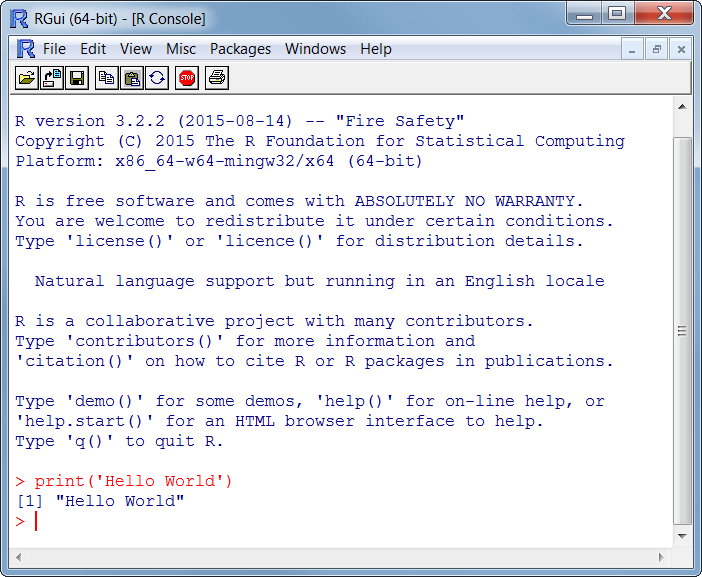
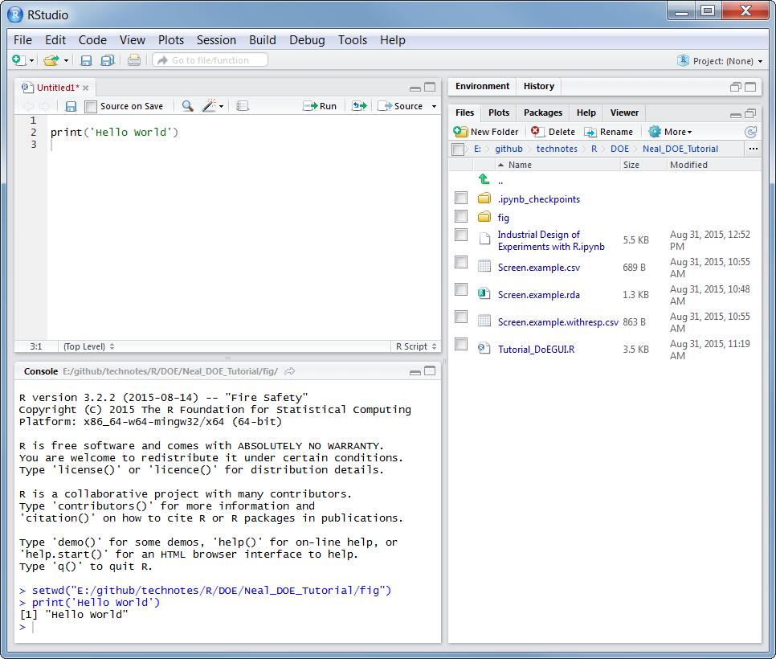
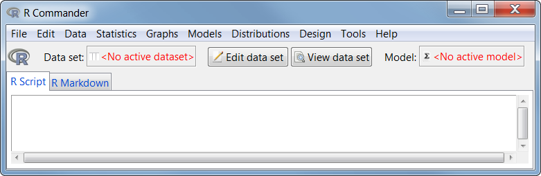
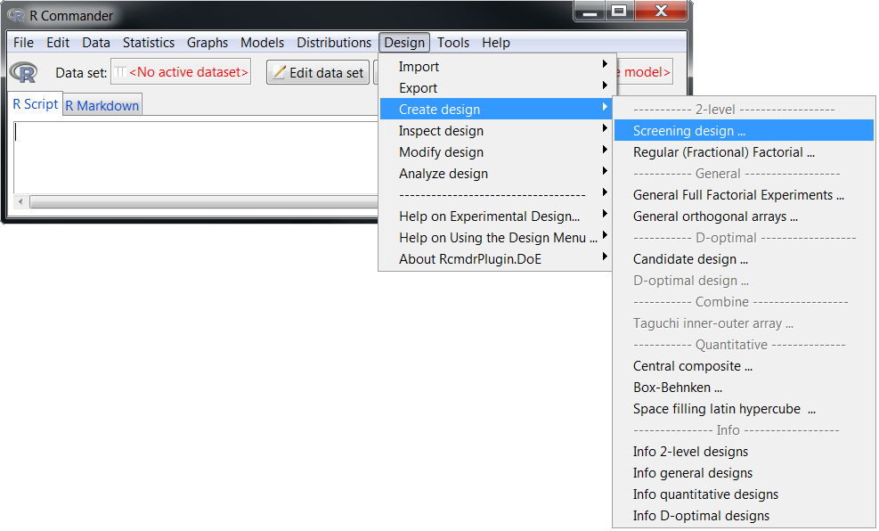
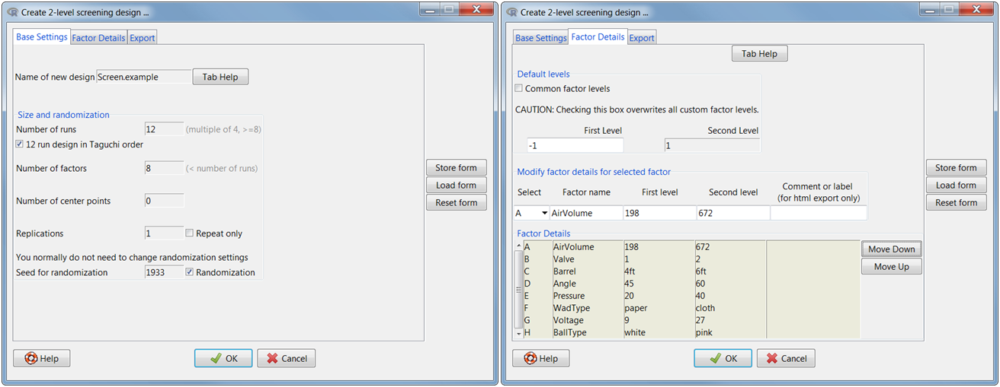
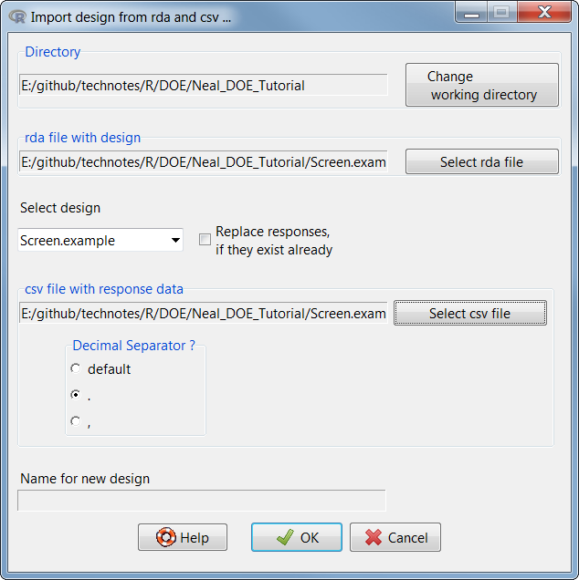
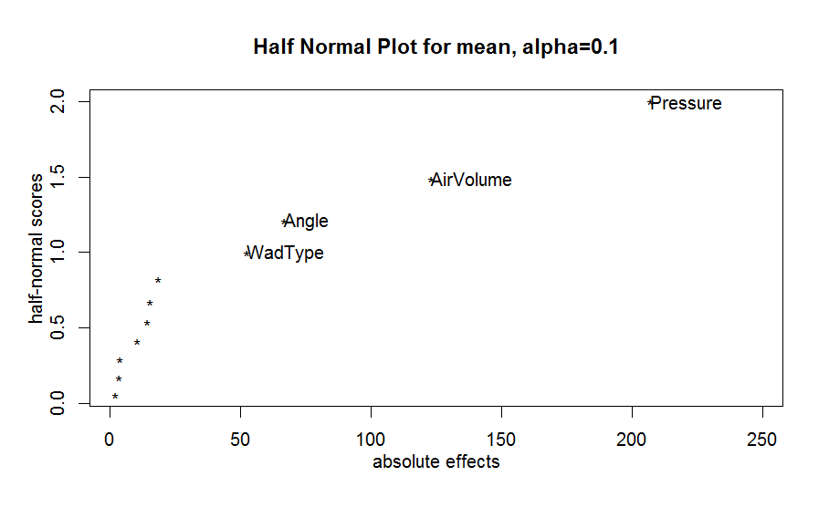
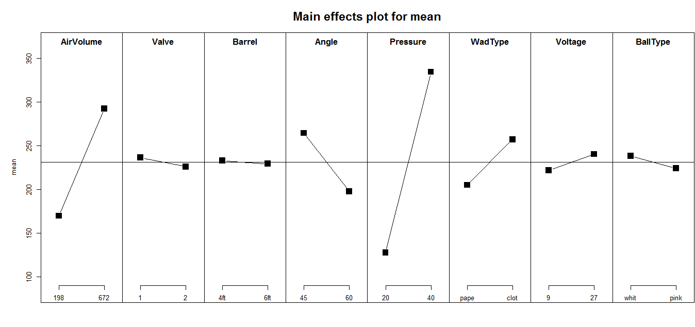

Industrial Design of Experiments with R
Motivation
Python is my favorite language. But, I also practice polyglottery(using multiple languages...I know, I had to use that word!). For the years of using python, I have rarely come across a problem that I haven't been able to solve or hasn't been solved yet in python. Well, today is the day.
I enjoy statistics, and a very useful tool in the statisticians toolbox is the Experimental Design, or DOE (Design of Experiments). I searched for hours trying to find an open-source alternative to the Minitab DOE package, which is nice if you have a license, and found limited options. I evaluated pyDOE, but it only designs experiments, not analyzes them. There are a couple open-source statistics packages, such as sofa, but why would you use anything other than R? Yes, I know the answer, because it is a programming language, not a nice GUI. Well, I encourage you to make the plunge, because I haven't been impressed with a programming language in a long time, and R has impressed me.
I assume you are familiar with DOE principles. If not, check out a R-DOE-book or for theory, Design and Analysis of Experiments by Montgomery is a classic. As for R, you don't need to be an expert, but it helps to play around with it, perhaps some golf.
Installation
R Base install and RStudio
To get started, I am using Windows 7. To install R, check out R-Base Package.
R does not come with a GUI. It is just a command line for executing R-code that is an ascii file with the extension *.r

Fortunately some awesome GUI's already exist. rkward is cool, but I prefer Rstudio. RStudio has a built in script editor, a console for running commands, a plot window, a file explorer, and a help window. What more could you ask for? Take some time and familiarize yourself with RStudio.

For more information on the R DOE package we will be using, check out Prof. Dr. Ulrike Grömpings page. The walk-through here is derived from this document.
Open up RStudio and familiarze yourself with the tools. I am really impressed with all the extra features with reporting and html/markdown exporting, and am excited to check those features out in the future.
I found three hotkeys that I use all the time are:
To restart the R console ctrl+shift+F10
To run the current line, ctrl+enter
To run the script, ctrl+alt+r
If the installtion gives you trouble, or you want to start using R immediatley, check out the R-Fiddle
R Packages
Custom R packages are really easy to install if you know how. The packages are stored and managed by users in the CRAN(The Comprehensive R Archive Network). For example, the DOE Package website shows information on the package. Luckily, we don't need to read all of that. We can install all the packages from our R program.
For the DOE we will create and analze, we need to first install the required packages. I don't know if all these packages are needed, but I pulled these from the CRAN site. Once you have RStudio open, copy and paste these install commands in a new script and hit ctrl+alt+r
install.packages("DoE.base")
install.packages("FrF2")
install.packages("DoE.wrapper")
install.packages("RcmdrPlugin.DoE")
install.packages("RcmdrPlugin.Export") # Graphically export objects to LaTeX or HTML
install.packages("RcmdrPlugin.FactoMineR") # Graphical User Interface for FactoMineR
install.packages("RcmdrPlugin.HH") # Rcmdr support for the HH package
install.packages("RcmdrPlugin.IPSUR") # Introduction to Probability and Statistics Using R
install.packages("RcmdrPlugin.SurvivalT") # Rcmdr Survival Plug-In
install.packages("RcmdrPlugin.TeachingDemos") # Rcmdr Teaching Demos Plug-In
install.packages("RcmdrPlugin.epack") # Rcmdr plugin for time series
install.packages("RcmdrPlugin.orloca") # orloca Rcmdr Plug-in
install.packages("Rcmdr") # at the R prompt
install.packages("conf.design")
install.packages("lhs")
install.packages("AlgDesign")
install.packages("DiceDesign")
install.packages("rsm")
Once that finishes, you will need to restart the R console, so hit ctrl+shift+F10 or just restart RStudio.
Design of Experiements
For the total newbie, a experimental design is a statical method for modeling a system, especially a complex system that is not easily analytically modeled. The system will have some given inputs, or factors, and outputs, or responses. The goal is to determine what factors are significant in the contribution to the effect of the response(s). Since our experiment is empirical, we expect some error, but that is OK because the statistical significance will be one of the results we will obtain. For DOE experts, sorry about my simple explaination. I am an engineer, not a statistician.
The screening experiment we will be running is to model the factors or variables when operating a potato gun to functionally understand the distance it can shoot. We will do a handful of runs, or shots with the gun, and see what is contributing to the distance, positivley or negatively. This allows us to run as few runs as possible to find any significant factors. We will start with 8 factors, with 2 levels, and one response, distance. That may seem like a lot of runs to the naive experimenter, actually $2^8=256$ combinations, or full-factorial. If that is done, you will quickly lose interest, money, or supporters by taking so long. So, before we run an experiment that detailed, we should screen out the insignificant factors first. The details of screening experiments can be found in the help documents in Rstudio or any DOE textbook.
| Factor | Low Setting | High Setting |
|---|---|---|
| AirVolume | 198 | 672 |
| Valve | 1 | 2 |
| Barrel | 4 | 6 |
| Angle | 45 | 60 |
| Pressure | 20 | 40 |
| WadType | paper | cloth |
| Voltage | 9 | 27 |
| BallType | pink | white |
The general workflow (with menu paths) when doing experiments in R is: * Design -> Create Deasign -> Screening Design * Set Name, number of runs, factors, and factor details * Select Button View data set and review the experiment * Design -> Export -> Export Experiment * Export a rda, html, and csv file. * In a spreadsheet application, eg Libreoffice, add a column to the csv file with the response variable(s) * Design -> Re-import experiment from csv and rda * perform analysis and generate plots and report
DOE Setup
Now we can start our DOE! We can do everything with the R command line or a script, but lets use RCommander to create the DOE. To launch RCommander, which is the GUI designed to be used with the DOE package, in the RStudio console, type:
require(RcmdrPlugin.DoE)
This should launch RCommander, which will run alongside RStudio and use the console for output.

From the RCommander menu. we will be using the Design menu for the DOE setup, experiment, and analysis. Lets setup our experiment.

From the interface here, filling the information manually or use the provided csv file.

This will generate a randomized screening experiemnt experiement with 12 runs. There are 3 dummy factors, e1,e2,e3 which are necessary for screening experiments. They can be ignored or see the manual for more details.
| Run | AirVolume | Valve | Barrel | Angle | Pressure | WadType | Voltage | BallType | e1 | e2 | e3 | distance |
|---|---|---|---|---|---|---|---|---|---|---|---|---|
| 1 | 198 | 2 | 4ft | 60 | 40 | paper | 27 | pink | -1 | -1 | 1 | 203.771 |
| 2 | 672 | 1 | 6ft | 60 | 20 | paper | 27 | pink | -1 | 1 | -1 | 140.046 |
| 3 | 672 | 2 | 4ft | 45 | 40 | paper | 27 | white | 1 | 1 | -1 | 424.479 |
| 4 | 198 | 1 | 4ft | 45 | 20 | cloth | 27 | pink | 1 | 1 | 1 | 127.875 |
| 5 | 198 | 2 | 6ft | 60 | 20 | cloth | 27 | white | 1 | -1 | -1 | 78.667 |
| 6 | 672 | 2 | 6ft | 45 | 20 | paper | 9 | pink | 1 | -1 | 1 | 167.979 |
| 7 | 198 | 1 | 4ft | 45 | 20 | paper | 9 | white | -1 | -1 | -1 | 85.521 |
| 8 | 198 | 1 | 6ft | 60 | 40 | paper | 9 | white | 1 | 1 | 1 | 208 |
| 9 | 198 | 2 | 6ft | 45 | 40 | cloth | 9 | pink | -1 | 1 | -1 | 313.813 |
| 10 | 672 | 2 | 4ft | 60 | 20 | cloth | 9 | white | -1 | 1 | 1 | 166.021 |
| 11 | 672 | 1 | 6ft | 45 | 40 | cloth | 27 | white | -1 | -1 | 1 | 466.771 |
| 12 | 672 | 1 | 4ft | 60 | 40 | cloth | 9 | pink | 1 | -1 | -1 | 389.958 |
DOE Experiment
To run your experiment, go through each run, set-up the system as prescribed by the factors, and record the response. Once you run the experiment and enter your results in the csv, re-import the csv to analyze. 
DOE Results
The visualizations that are generated using R for DOE are great! The results should tell us which factors should be studied with higher fidelity, and which factors are not necessary to continue studying.
Without going into great detail, here are some examples.
Half-Normal Plot
Design -> Analyze design -> Effects (Half) Normal Plots
Ensure the dummy factors e1,e2,e3 are included  Observe that Pressure, Airvolume, Angle, WadType have the largest absolute effect, respectivley
Linear-Model
Design -> Analyze design -> Default Linear Model
Ensure the dummy factors e1,e2,e3 are removed
Coefficients:
Estimate Std. Error t value Pr(>|t|)
(Intercept) 231.075 4.583 50.423 1.72e-05 ***
AirVolume1 61.467 4.583 13.413 0.000896 ***
Valve1 -5.287 4.583 -1.154 0.332219
Barrel1 -1.862 4.583 -0.406 0.711701
Angle1 -33.331 4.583 -7.273 0.005364 **
Pressure1 103.390 4.583 22.561 0.000191 ***
WadType1 26.109 4.583 5.697 0.010722 *
Voltage1 9.193 4.583 2.006 0.138514
BallType1 -7.168 4.583 -1.564 0.215736
---
Signif. codes: 0 '***' 0.001 '**' 0.01 '*' 0.05 '.' 0.1 ' ' 1
Residual standard error: 15.87 on 3 degrees of freedom
Multiple R-squared: 0.9962, Adjusted R-squared: 0.986
F-statistic: 97.78 on 8 and 3 DF, p-value: 0.001539
Again the Pressure, Airvolume, Angle, WadType have the largest absolute effect, respectivley. Those factors are also less than our p-value, which we defined as 0.1, which tells us that the results are significant. Since this is a screening experiment, interactions are not computed.
Main-Effects Plot
Design -> Analyze design -> Main Effects and Interactions Plots 
The main effects plot is a great visual to qualitativley grasp the results of the experiment. We can tell the how much the factor contributes to the response by the slope and whether it is positive or negative by the slope. Flat lines indicate that the factor with the selected levels is insignificant in the model we have created.
Conclusion
A simple example was shown how to use an open-source solution for creating and analzying statistical experiments using R. This is the only open-source tool I have found, so if anyone knows of another, please let me know. I have found R to be a great lanugage to know. The syntax is fine, the packages are numerous, and the community is good. Running experiments with DOE methods can be a great tool to have in nearly any industry. My background in Industrial and Systems Engineering exposed me to DOE for traditional manufacturing studies, but the concepts can be used in nearly any situation where understand of cause-and-effect is desired.
Stay Curious!